SDE exploration noise
For RoboFFT-F, $\eta$ controls the Gaussian noise injected into the rollout sampler. Moderate noise balances exploration and stable policy improvement; too little or too much degrades performance.
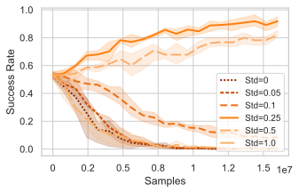
Forward-process reinforcement learning for robot manipulation
Accepted by CoRL 2026
*Equal contribution †Corresponding authors
1Institute of AI, Peking University 2PKU-PsiBot Joint Lab 3Nanjing University
The problem
Diffusion and flow-based policies capture complex, multimodal action distributions from demonstrations. Yet imitation-only policies remain limited by imperfect demonstrations and distribution shifts, and further improvement typically requires additional expert data.
Reinforcement learning offers a way to improve through environment interaction and reward feedback. For generative robot policies, however, likelihood estimation is generally intractable, making standard likelihood-based policy-gradient updates difficult to apply.
RoboFFT is an online reinforcement learning framework that applies forward noising to sampled actions and uses the weighted score/flow matching loss to construct a surrogate policy ratio for PPO-style updates. This reuses the generative pretraining objective for reinforcement fine-tuning. Experiments with popular generative robot policies on simulation benchmarks, including long-horizon and sparse-reward tasks, demonstrate improved success rates, training stability, and efficiency. We also evaluate VLA fine-tuning and integrate RoboFFT into a real-world RL framework for robot deployment.
Project overview
The central idea
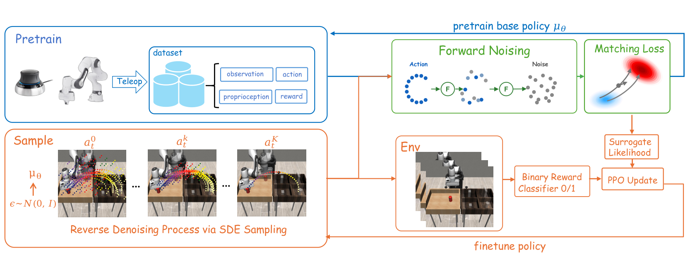
RoboFFT pretrains a generative policy, collects rewarded rollouts, applies forward noising to sampled actions, and uses the matching loss for PPO-style updates.
For a rollout action chunk $a_t^0$, the same forward path used in generative pretraining produces a noisy action:
Prior work connects weighted denoising and flow-matching objectives to a variational evidence lower bound. We therefore use the matching loss as a surrogate negative log-likelihood for the clean action, rather than treating it as an ordinary auxiliary regression loss:
Taking the matching-loss difference between the current and rollout policies cancels the parameter-independent term and constructs a surrogate policy ratio:
We estimate each matching loss using $N_{\mathrm{mc}}$ sampled noise levels and Gaussian perturbations per action, reusing the same samples for the current and old policies to reduce variance. A ratio temperature $\alpha_{\mathrm{ratio}}$ rescales this loss difference before exponentiation, giving $\widehat{\rho}^{\,s}_t$. This calibrated ratio is optimized with PPO clipping and the rollout advantage:
This is the central distinction of RoboFFT: the policy-gradient ratio is built from differences in the same matching objective used for generative pretraining. RoboFFT-F applies this update to flow policies, while RoboFFT-D uses noise-prediction losses for diffusion policies.
Exploration and stabilization. RoboFFT-F injects Gaussian noise with strength $\eta$ into its flow sampler during rollouts (SDE sampling). RoboFFT-D weights denoising errors by $\widetilde{\Delta\lambda}$, the change in clipped log signal-to-noise ratio between adjacent diffusion steps, to account for the noise schedule. It also attenuates negative-advantage terms by $\beta_{\mathrm{neg}}\in(0,1]$; $\beta_{\mathrm{neg}}=1$ leaves them unchanged. On harder tasks, an anchor loss regularizes the policy toward actions from its best-evaluation checkpoint. The analyses below examine these design choices and how the resulting updates change action quality.
Optimizes transitions through the internal denoising chain, producing a multi-step MDP and a heavier optimization graph.
Uses the matching loss as a surrogate action negative log-likelihood, then forms the policy ratio from its current-versus-old loss difference.
Main evidence
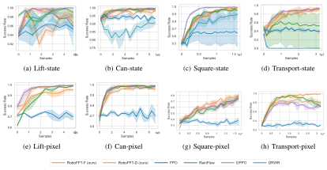
Across state and pixel observations, RoboFFT is competitive on easier tasks and shows more sustained improvement on the long-horizon Square and Transport tasks.
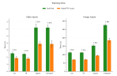
Mean and standard deviation over the first ten training iterations.
RoboFFT-F achieves a mean 1.53x speedup over ReinFlow. RoboFFT-D achieves a mean 38.0x speedup over DPPO on Robomimic state-input tasks.
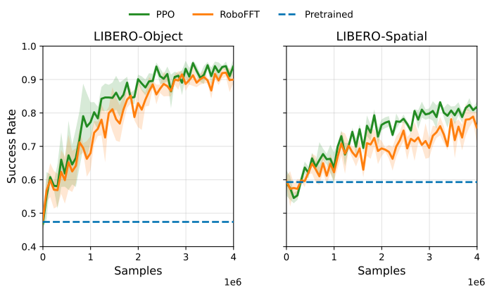
VLA fine-tuning success-once results on LIBERO-Object and LIBERO-Spatial.
RoboFFT improves the pretrained $\pi_0$ policy through its flow-based action head and remains competitive with the $\pi_{RL}$ baseline.
Qualitative evaluation
Deployment under limited interaction
We integrate RoboFFT into a real-world RL framework, starting from a rectified-flow policy pretrained on thirty SpaceMouse demonstrations. IQL estimates advantages from collected rollouts, while offline RoboFFT, imitation refresh, and online refinement are repeated for five iterations with approximately 30 rollouts per iteration.
| Task | Robot | Type | Pretrain | Offline | Online |
|---|---|---|---|---|---|
| Pick Eggplant | Franka Research 3 | Pick-and-place | 12/20 | 18/20 | 20/20 |
| Peg Insertion | Franka Emika Panda | Precision assembly | 10/20 | 19/20 | 20/20 |
| Pour | Franka Emika Panda | Granular manipulation | 9/20 | 15/20 | 18/20 |
| Cabinet Retrieval | Franka Research 3 | Long horizon | 5/20 | 14/20 | 17/20 |
| Pretrain | BC Aggregation | DRWR | Offline RoboFFT | Online RoboFFT / RL100 |
|---|---|---|---|---|
| 12/20 | 14/20 | 12/20 | 18/20 | 20/20 |
All methods use the same data budget; this separates RL post-training from simple data aggregation.
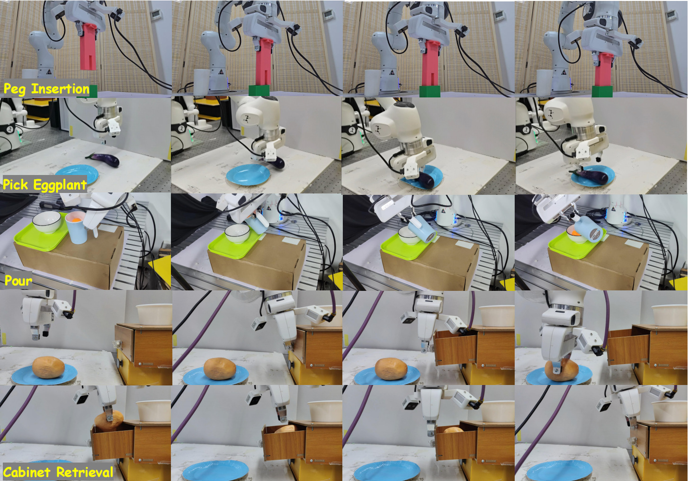
Successful real-world rollouts across the four-task suite.
Selected analysis
The following Square-state ablations examine the exploration and matching-loss estimation choices introduced above, followed by the diffusion-specific weighting and negative-advantage stabilization.
For RoboFFT-F, $\eta$ controls the Gaussian noise injected into the rollout sampler. Moderate noise balances exploration and stable policy improvement; too little or too much degrades performance.

$N_{\mathrm{mc}}$ is the number of forward-noising samples used to estimate each action’s matching loss. For RoboFFT-F, increasing it from 1 to 2 improves convergence, while larger budgets add limited gains.
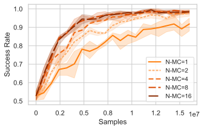
For RoboFFT-D, $\widetilde{\Delta\lambda}$ weights denoising errors across noise levels in the surrogate loss. It improves convergence over plain weighting; this controls loss estimation, not rollout exploration noise.
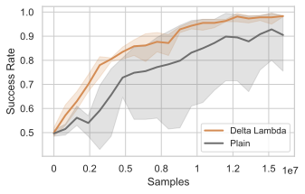
For RoboFFT-D, $\beta_{\mathrm{neg}}$ scales negative-advantage update terms to limit over-penalization. Compared with no discount ($\beta_{\mathrm{neg}}=1$), $\beta_{\mathrm{neg}}=0.125$ gives the strongest sustained performance in this Square-state ablation.
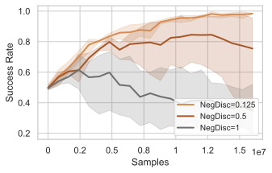
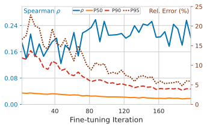
How closely does the matching-loss ratio used in Method agree with a likelihood-based reference? During RoboFFT-F finetuning on Square-state, we compare the temperature-scaled surrogate with a ReinFlow-style closed-form reference on 2,048 action chunks per iteration, using the same current and old policies.
Spearman correlation measures agreement in sample ranking; relative-error quantiles measure numerical differences between ratios. Near the end, relative errors fall below 5% for at least 90% of chunks, while rank correlation remains around 0.2. Numerical agreement improves in this setting, without establishing strict equivalence.
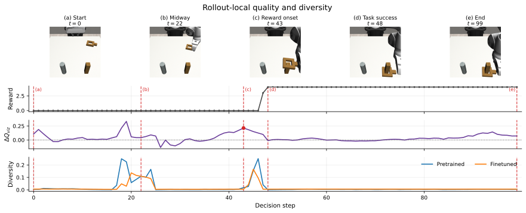
To examine how the updates reshape the policy, we compare pretrained and finetuned action samples at the same states and with matched latent noises along a successful Square rollout. An auxiliary critic $Q_{\mathrm{viz}}(s,a)$ scores action quality for analysis only; $\Delta Q_{\mathrm{viz}}$ is the finetuned-minus-pretrained mean score.
Diversity $D$ is the mean pairwise squared distance between action chunks, normalized by their dimension; $\Delta D=D_{\mathrm{pre}}-D_{\mathrm{ft}}$ measures its reduction. Around grasping, transport, and alignment, higher diagnostic values and lower diversity suggest that finetuning concentrates samples around more useful behaviors.
Open research
Checkpoints and datasets are available on ModelScope and HuggingFace as identical mirrors; either repository contains the same files. Code, configurations, benchmark instructions, and experiment logs will be linked here after public release.
@inproceedings{robofft2026,
title={{RoboFFT}: Fine-tuning Generative Robot Policies with Forward Process},
author={Li, Yu and Hu, Shenghe and Wang, Yuhan and Pu, Yaoxiang and Zhang, Haotong and Chen, Yuanpei and Yang, Yaodong},
booktitle={Conference on Robot Learning (CoRL)},
year={2026},
note={Accepted for publication},
url={https://arxiv.org/abs/2609.32236}
}